Префектура Ямагути · Симоносэки · отель и еда
«Ризонарэ Симоносэки»: курорт у пролива Каммон, где фугу готовят по-итальянски
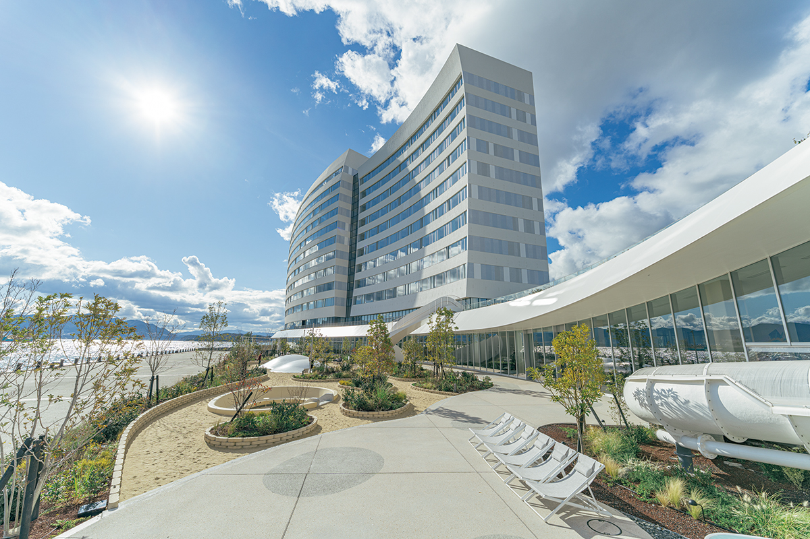
В декабре 2025 года на набережной Симоносэки открылся курорт «Ризонарэ Симоносэки». Все его номера смотрят на пролив Каммон, а главный ресторан превращает местную фугу в итальянский ужин из девяти блюд.
Открытие
Город, где наконец есть где остаться
Симоносэки стоит на самой западной оконечности острова Хонсю, у пролива Каммон, который отделяет его от Кюсю. Город веками был транспортным узлом, и на его берегах разворачивались важные главы японской истории: от войны Гэмпэй, междоусобицы кланов Тайра и Минамото в 1180–1185 годах, до событий, которые привели к реставрации Мэйдзи 1868 года. Смотреть здесь есть что, но с гостиницами было небогато, и Симоносэки привыкли считать городом на один день.
Это изменилось 11 декабря 2025 года, когда компания «Хосино Ризорт» открыла здесь восьмой курорт своей марки «Ризонарэ». От него ждут оживления всего района пролива: и Симоносэки, и Китакюсю на противоположном берегу.
Сама компания называет «Ризонарэ Симоносэки» дизайнерским отелем у пролива, и главное в нём вид. Все 187 номеров выходят на пролив. Интерьеры выдержаны в изумрудно-зелёном цвете здешней воды, а огромные окна обрамляют пейзаж, как картину. В номере «Кайкё Кабана» на верхнем этаже пол гостиной засыпан белым песком: можно качаться в гамаке и смотреть на воду, будто лежишь на собственном пляже.
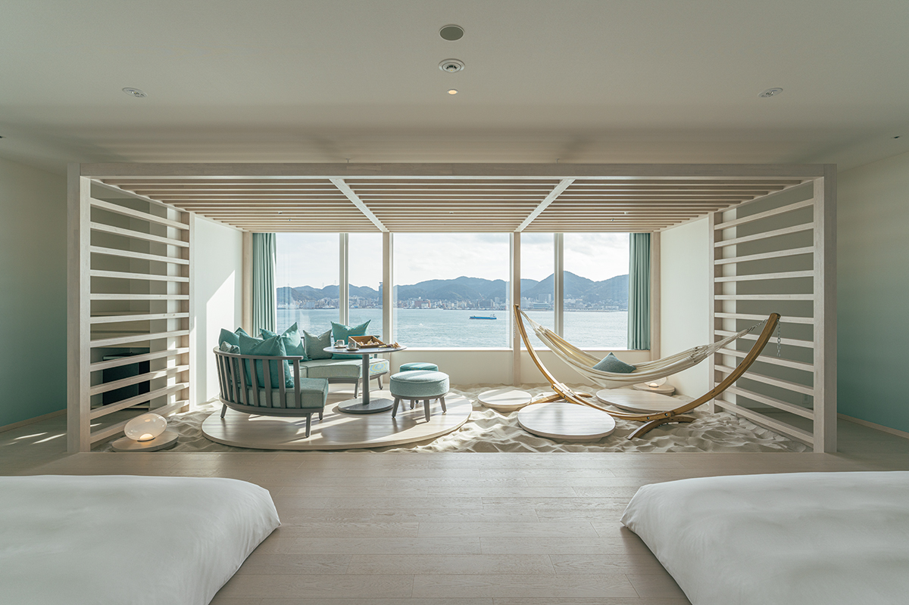
О природе здесь тоже подумали. Свет в номерах связан с кондиционером и вентиляцией, чтобы не тратить лишнюю энергию, а тепло сточной воды из номеров идёт на подогрев бассейна.
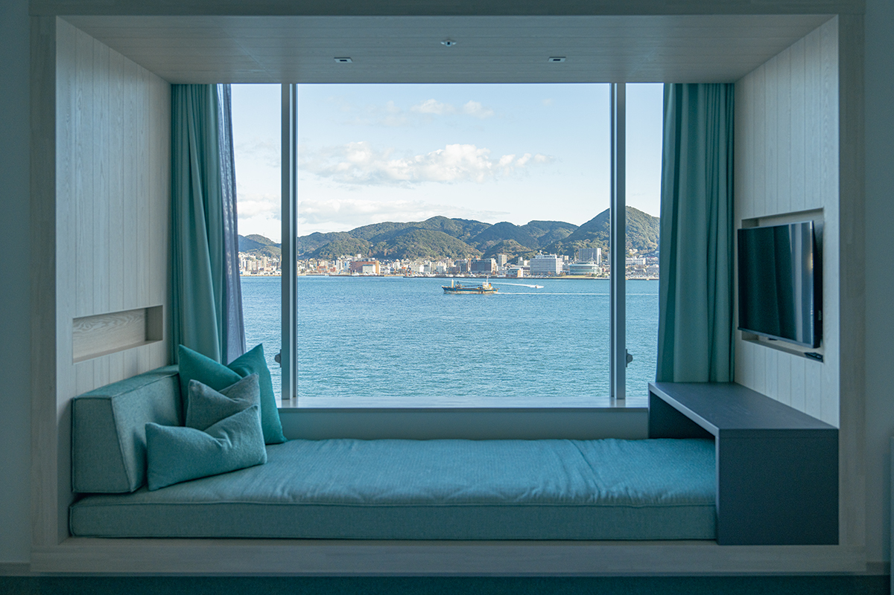
За день через пролив Каммон проходит около 500 судов, и вид за окном меняется ежечасно. На рассвете вода становится оранжевой, днём блестит изумрудом, а ночью на другом берегу зажигаются огни порта Модзи. Корабли, течение и свет складываются в картину, от которой трудно оторваться.
Архитектура
Здание, похожее на корабль
Курорт стоит на набережной рядом с рыбным рынком Карато и океанариумом, и издали он похож на судно, идущее по проливу. Это первое здание марки «Ризонарэ», построенное с нуля, и его с самого начала задумывали частью пейзажа. Над интерьерами работало бюро Klein Dytham architecture, над архитектурой компания «Нихон Сэккэй», и обе команды больше всего внимания уделили изгибам.
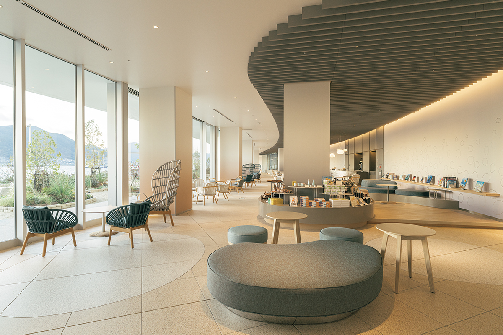
Изгиб в Симоносэки повсюду: в арке моста Каммон, в волнах, в водоворотах пролива. Поэтому дуги есть и на фасаде, и в каждом зале. Верхняя часть здания сложена из двух выгнутых в разные стороны дуг, нижняя из одной длинной, примерно на 250 метров. Белая штукатурка фасада ловит свет и оттенки неба. С разных точек изгибы напоминают то паруса кораблей китамаэбунэ, которые когда-то заходили в Симоносэки, то сильное течение, то дельфинов и фугу, плавающих в здешних водах.
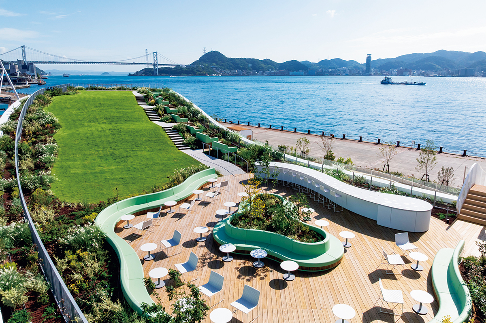
Фугу, она же рыба-собака, здесь вообще главный герой. Её силуэты рассыпаны по всему зданию, и идею подсказал соседний океанариум «Кайкёкан», где собрано больше видов фугу, чем где-либо в мире. Искать их по залам отдельное удовольствие.
Отдых
Пляж, бассейны и сауна у воды
Чтобы наслаждаться проливом, на курорте устроили несколько площадок. На пляже «Фугу» насыпан песок, на террасе «Нами-нами» с газоном и скамейками можно сидеть сколько угодно, глядя на мост Каммон.
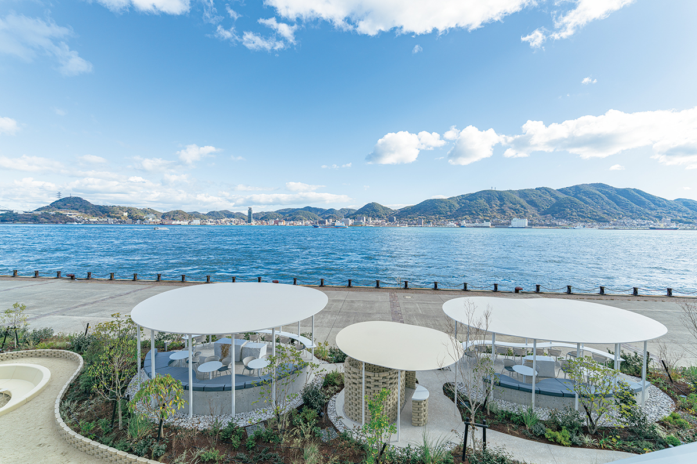
Из лобби сразу видно разноцветный бассейн «Фугу», украшенный рыбами-собаками. Он крытый и работает в любую погоду. Водная горка длиной около 30 метров разгоняет до 10 узлов, ровно как течение в проливе, так что спуск похож на заплыв в настоящем потоке. Есть и игрушки, которые двигает вода, и семьи с детьми отсюда не уходят.
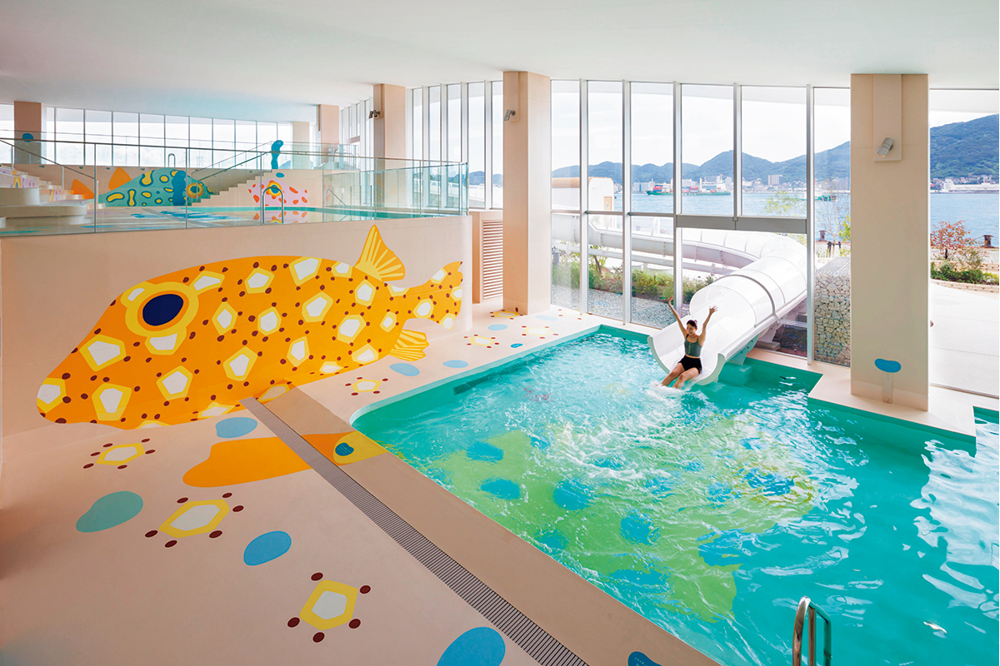
Бассейн-инфинити отдан взрослым. Его наполняют водой прямо из пролива, и кажется, что гладь бассейна сливается с морем и небом. Утром здесь проходила «Аква-прогулка по проливу»: растяжка в воде, а потом рассвет из бассейна. В 2026 году её проводили до 14 апреля. Есть и другие занятия: морская прогулка по проливу с рассказом о правилах судоходства и лекции об удивительной фугу от океанариума «Кайкёкан».
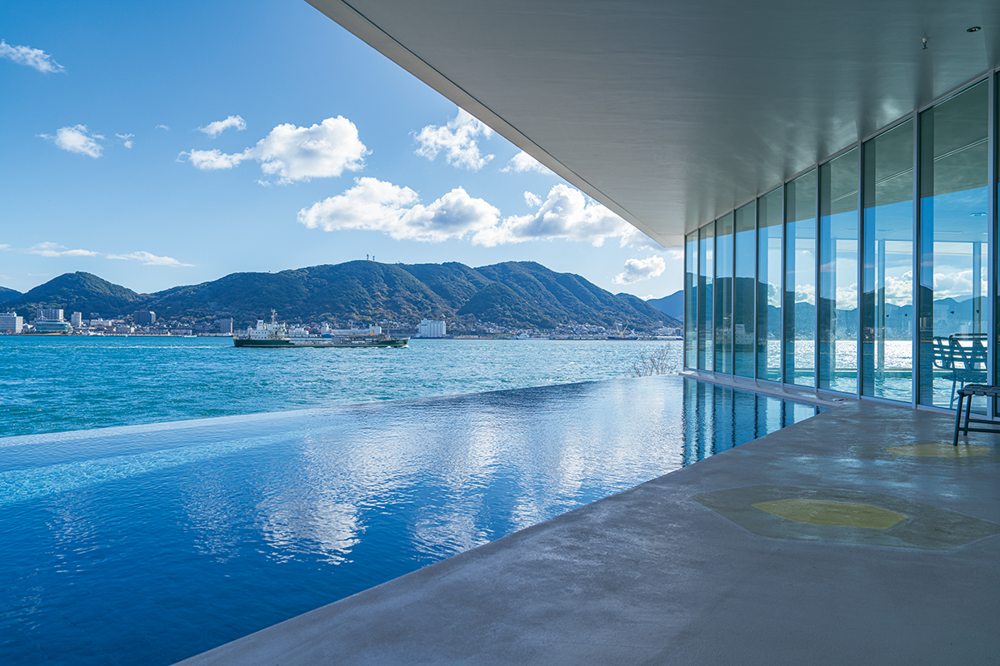
Зимой открывается сауна «Кайкё» с большими окнами на пролив. Пар гости поддают сами, а остыть можно на открытом воздухе.
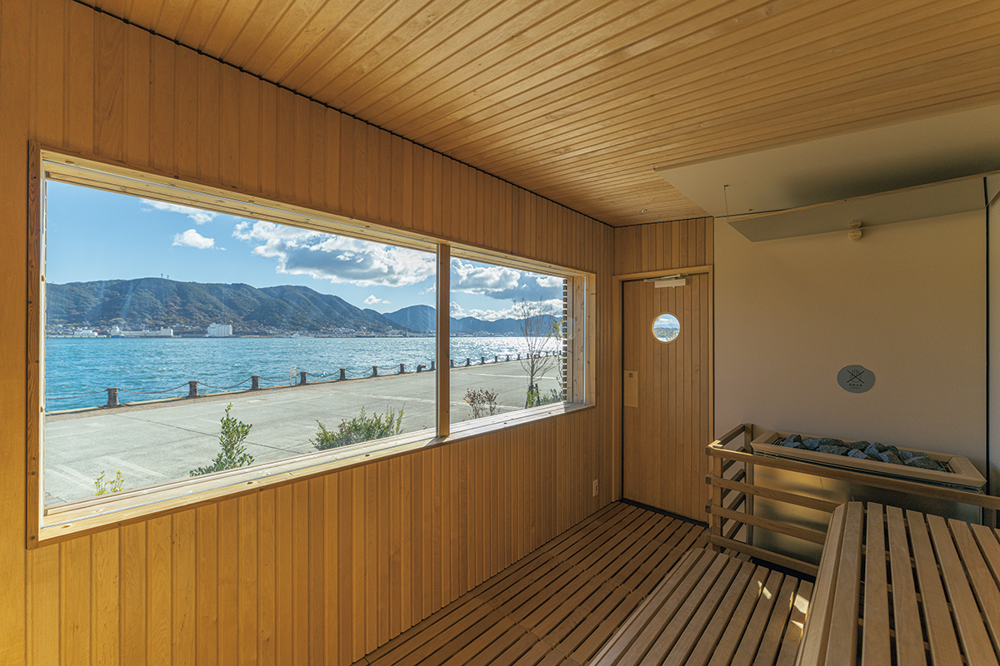
Ужин
Фугу на итальянский лад
Фугу первое, что вспоминают при слове «Симоносэки». Главный ресторан курорта OTTO SETTE SHIMONOSEKI посвятил ей всё меню и назвал его по-итальянски: Il Fascino Di Fugu, «очарование фугу». В Японии фугу обычно едят как сашими, в горячем котелке или во фритюре. Здесь из неё делают итальянскую кухню, чтобы открыть рыбу с новой стороны.
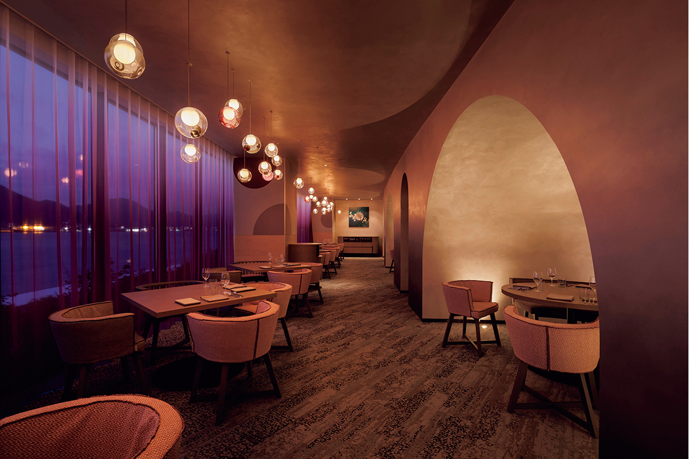
Ужин из девяти блюд меняется по сезонам, и в шести из них есть фугу с рынка Карато. В дело идёт вся рыба: мясо, кости, кожа. Один и тот же продукт раскрывается по-разному в зависимости от способа готовки.
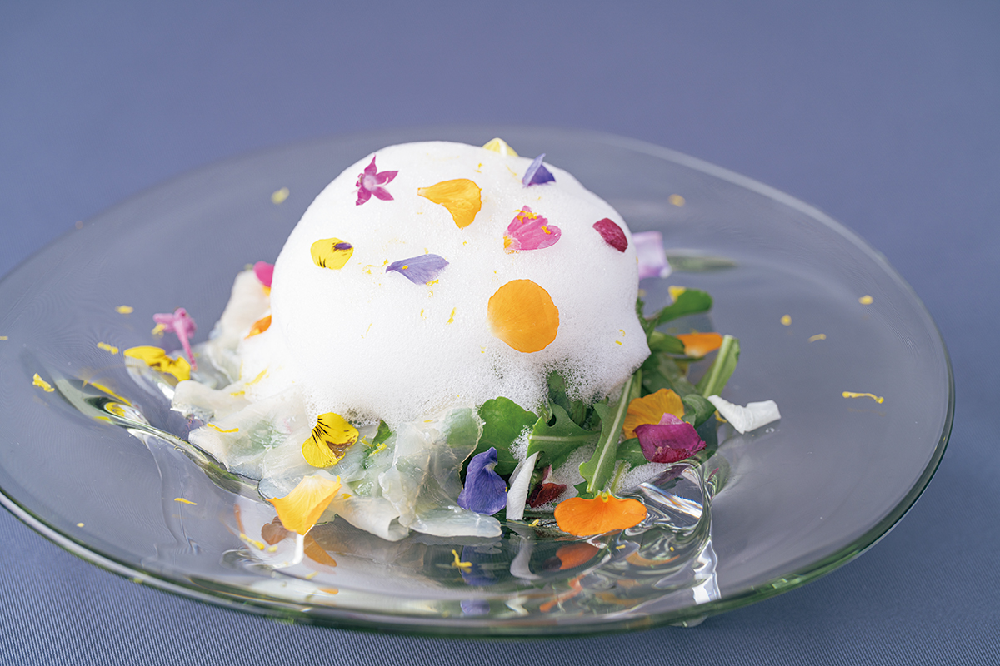
Студень из кожи фугу подают вместе с горячим бульоном из той же рыбы: во рту они смешиваются, и вкус раскрывается слой за слоем. В карпаччо кислая цитрусовая пена соединяется с мягким вкусом рыбы. Почти каждое блюдо чем-то удивляет.
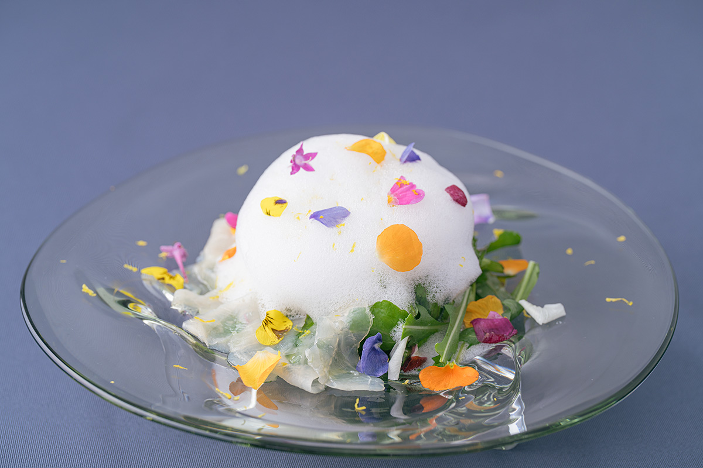
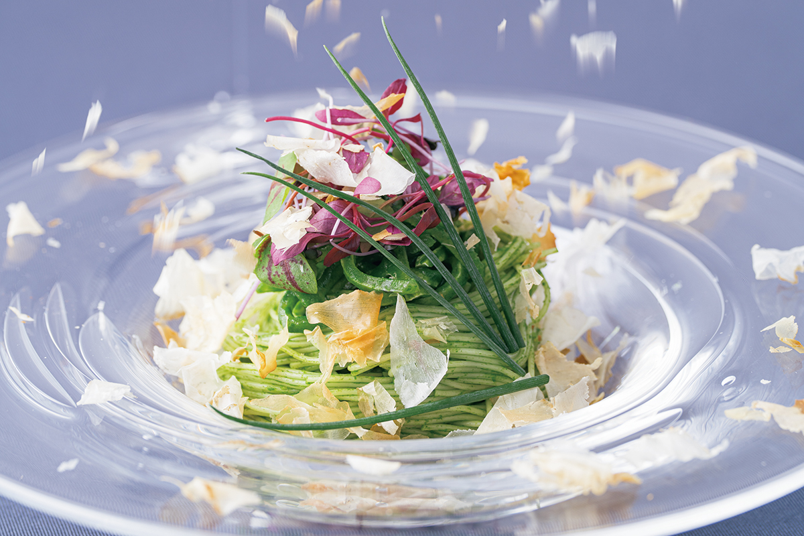
Основное блюдо: молоки фугу, обжаренные в муке, и говяжья вырезка. К ним подают «Ханаккори», овощ, выведенный в Ямагути, приготовленный на пару из травяной воды, и соус из подрумяненного масла с анчоусами, томатами и травами. Фугу появляется и во фритюре в хрустящей панировке из гриссини, и в ризотто на рисе для сакэ, сваренном на масле, сыре и рыбном бульоне.
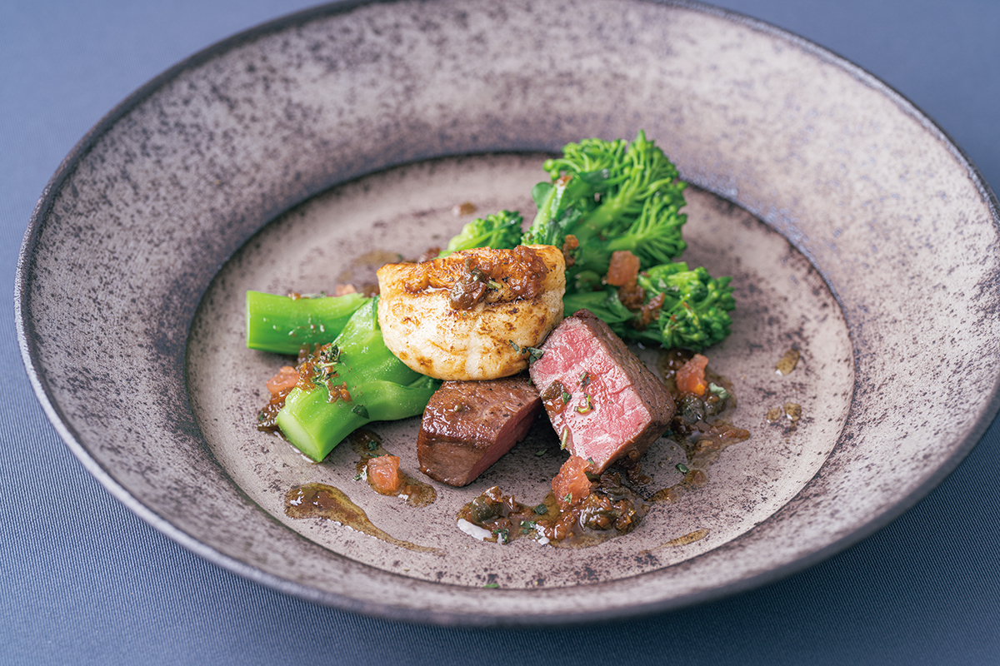
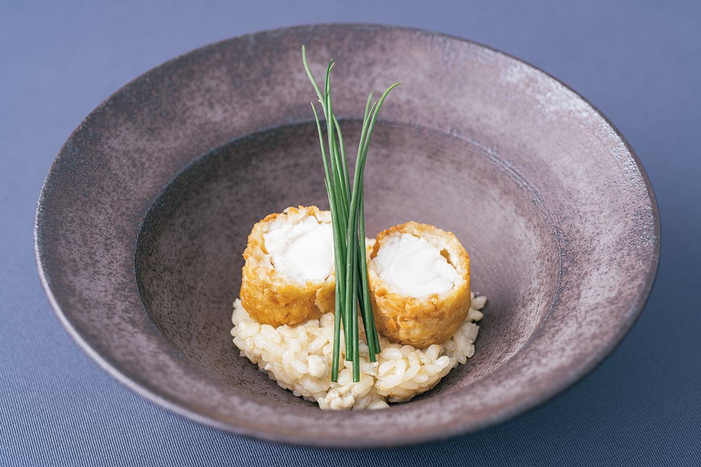
Блюда из других местных продуктов тоже есть. В первой закуске много осьминога, морских ежей и прочих даров пролива, а цитрусы из Ямагути появляются по всему меню. Посуда тоже местная: лакированная в технике Оути и керамика Хаги. К ужину предлагают сочетания с вином и местным сакэ.
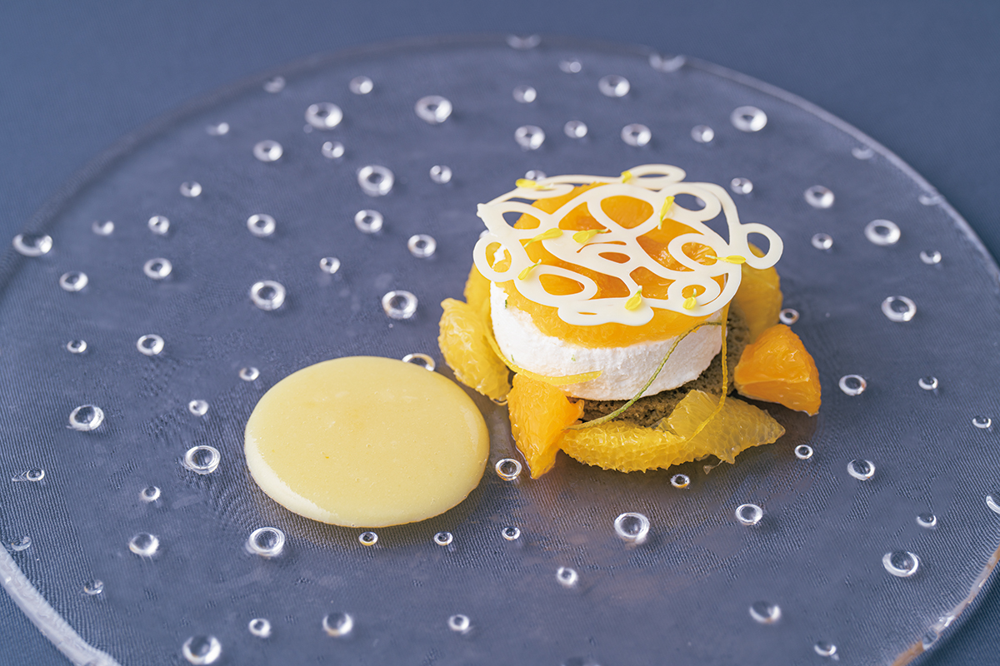
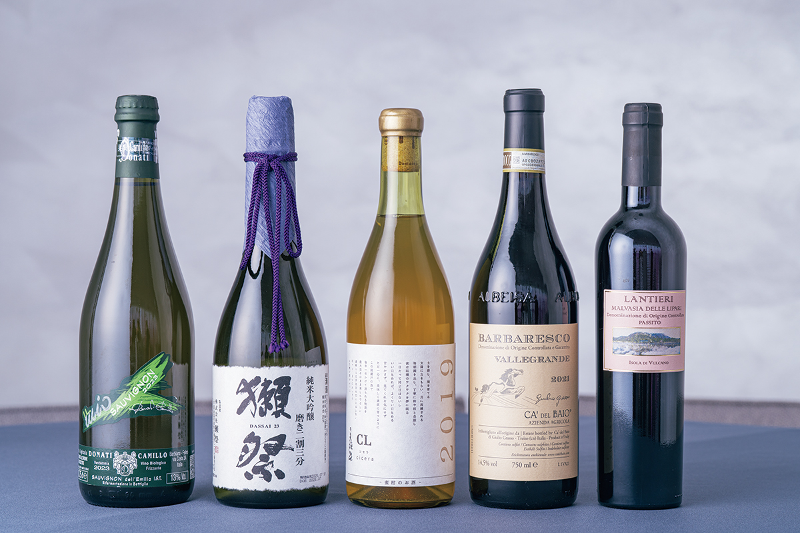
Буфет и бар
Для тех, кто остаётся надолго
Если вы приехали на несколько ночей, попробуйте ужин-буфет PUKU PUKU, где много разных блюд из фугу. На завтрак здесь кавара-соба, которую поливают бульоном из фугу, и французские тосты с цитрусовым соусом. Вечером славятся блюда из фугу и ростбиф, запечённый в морских водорослях.
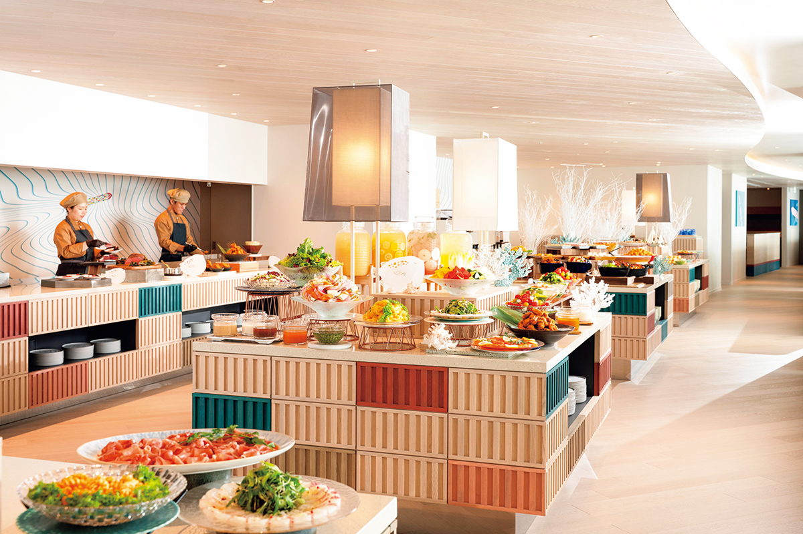
В кафе Books&Cafe стоят около 500 книг о море, кораблях и Ямагути. Днём здесь пьют кофе, едят капкейки и пробуют безалкогольные коктейли на сладком рисовом напитке амадзакэ, а вечером кафе превращается в лаунж, где наливают и алкоголь.
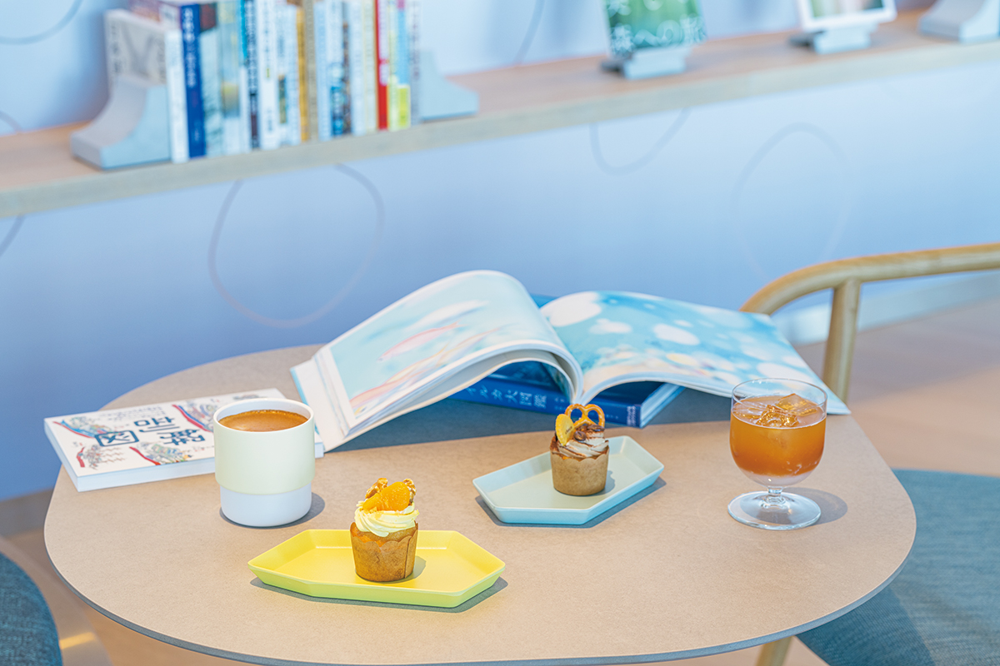
Вечером в кафе или на открытой террасе можно смотреть на огни пролива с бокалом в руке. Ночной набор к местной крафтовой коле, джин-тонику и закускам подают на подносе в виде контейнеровоза.
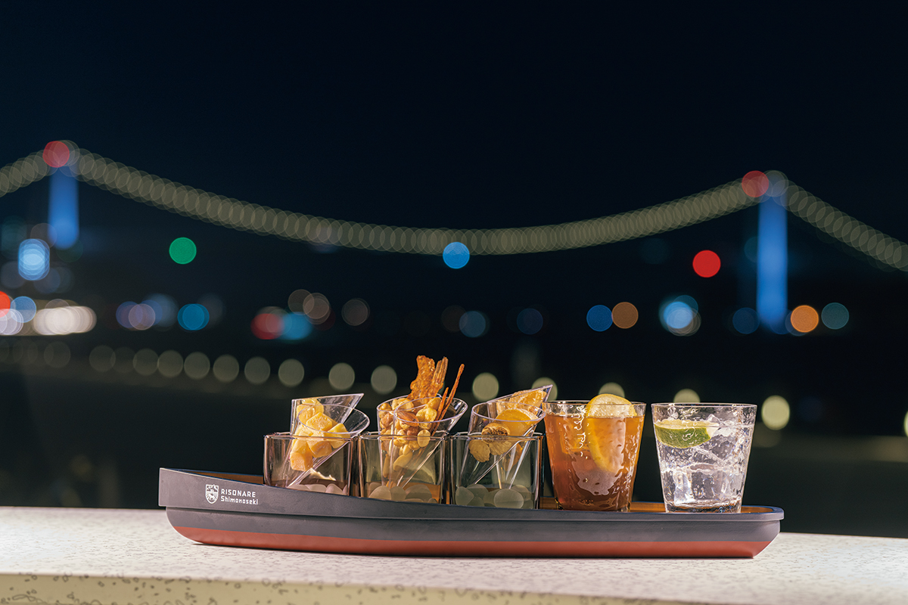
Номер в 2026 году стоил от 21 000 иен с налогом с человека за ночь при размещении вдвоём. Рестораны работают по предварительной записи.
«Ризонарэ Симоносэки»
- Адрес
- префектура Ямагути, Симоносэки, Арукапорто, 4-1
- Телефон
- +81 50-3134-8093 (9:30–18:00)
- Цены
- от 21 000 иен с налогом с человека за ночь при размещении вдвоём
- Заезд и выезд
- заезд с 15:00, выезд до 12:00
- Номера
- 187
- Как добраться
- от станции JR Симоносэки около 5 минут на автобусе, на машине около 10 минут от развязки Симоносэки скоростной дороги Тюгоку
Вокруг
Что посмотреть в Симоносэки
На один курорт не хватит и нескольких ночей, но и сам город стоит прогулок. В Симоносэки много старых зданий: бывшее британское консульство, дом торговой компании «Акита сёкай» и старейшая в Японии почта, которая до сих пор работает.
Есть и места, связанные с историей. Святилище Акама посвящено императору Антоку (1178–1185): ребёнком он погиб в проливе Каммон в последней битве войны Гэмпэй. На острове Ганрюдзима в 1612 году сошлись в поединке два знаменитых фехтовальщика, Мусаси Миямото (1584?–1645) и Кодзиро Сасаки (?–1612).
На шумном рынке Карато стоит попробовать свежие морепродукты, а потом за пять минут доплыть на пароме до порта Модзи на другом берегу и выпить в «какуути», маленьком баре при винной лавке.
Фото: Ацуси Ямахира.